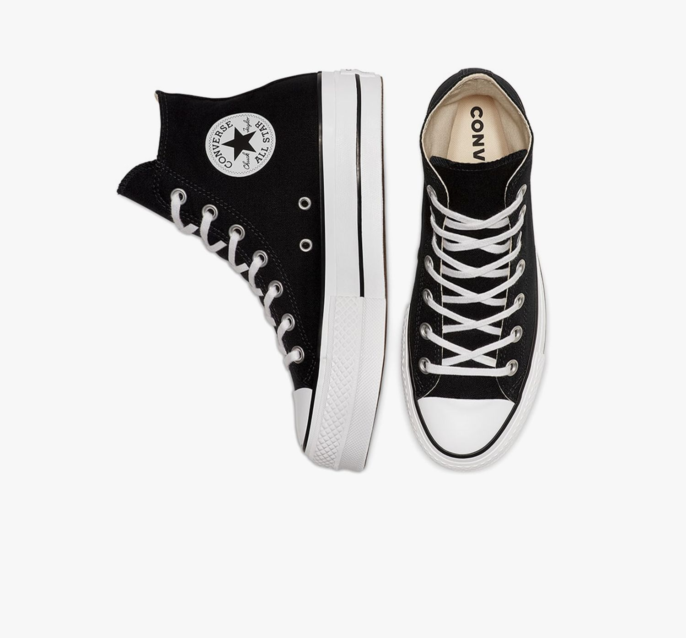

|  | Shoe Background:Inspired by the iconic looks of '90s girl bands, these platform Chucks are sure to turn heads. Canvas can be as refined or edgy as you'd like, while a double-stacked sole takes you higher. Color Style:-Black/White If you want to buy this Item Just go to:Converse Philippines |